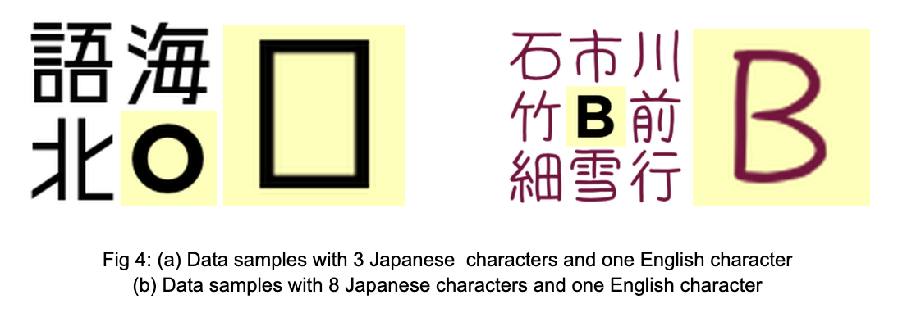

CS 7641 Team Members: Rachit Chadha, Khalid Shaikh, Mini Jain, Asmit Kumar Singh, Amrit Khera
Introduction/Background
We have all experienced that curiosity that arises while watching anime, pondering the meaning of the text displayed within the episodes. Animes frequently employ textual visuals to introduce new storylines or conclude existing ones, and these elements play a pivotal role in the overall viewing experience. Therefore, it would be immensely beneficial if this text could be seamlessly translated and integrated into the video, preserving its original style, including the color and font, while altering the content itself.
The potential applications of solving this challenge extend beyond anime, to translating movie or show posters effortlessly into the desired language, making real-time text translations accessible and natural.
Problem Definition
The objective of this project is to transform a Japanese image, including posters, anime frames, or real-world images, into English while preserving the essence, meaning, and visual style of the original image. This intricate challenge can be deconstructed into a pipeline as shown below.
The OCR and translation models have been the center of many research problems, and hence it's a solved problem, with no significant scope for improvement. The text eraser model detects and removes any textual elements within the image and fills the void seamlessly, maintaining the image's integrity, and is efficiently performed by models like DALLE. Hence, the primary focus of our project would be the Inter-Language font transfer model.
Dataset
The methodologies that we are using require 2 sets of images, the input and the target. The image translation models will learn the given Japanese text style and apply it to the translated English characters to get English text in the original style. Hence the model needs information on both the content and style of the image. The figure shows the process of our dataset creation with font .ttf files as our starting point, sourced from font websites like https://www.freejapanesefont.com, to generate sample input and output pairs. The input image tries to capture the style using Japanese font characters, while the input English character is passed in the middle. We have created a dataset of 10,000 samples.
DATASET CREATION
The dataset was created by using Japanese font characters in our training images juxtaposed with the English character in standard font, and the corresponding pair of that training image was the English character stylized in the Japanese font. We created two sets of data, one in which we used 8 Japanese characters for each English character, and another with 3 Japanese stylized characters for each English character. This allowed our model to learn diversified input. Both sets of data can be seen in Fig 4 below. We ran our experiments for both sets of data to determine which training input helped the model generate the stylized English character better.

DATASET PREPROCESSING
The preprocessing of the dataset plays a pivotal role in enhancing the robustness and generalization capabilities of the model. Hence, we applied varied augmentations to our original dataset to enhance our dataset by normalizing, rotating, and adding random cropping and jitter to the images in the dataset. Using these preprocessing techniques allows the model to handle a wide array of variations in orientations, and image quality of input images. It also enhances the model's resilience to different writing styles and helps prevent overfitting to specific patterns present in the training data.
Further, we combined the two images in each data sample, to create a single input image for the model. The pairing of images allowed for unsupervised learning of the GAN, with each pair consisting of the Japanese stylization as well as English stylization, as seen in Fig 5.
Methods
1.Pix2Pix / Pix2PixHD
Pix2pix is an image-to-image translation model, that translates the style (scene) of an image to another representation [1].
It's based on a Conditional Generative Adversarial Network (cGAN) architecture where a generator and discriminator are trained simultaneously in a min-max fashion. Pix2PixHD is an extension of Pix2Pix for higher resolution images using a multiscale generator [2], trained as shown in Fig 3.
2. CycleGAN
CycleGAN is also a cGAN like Pix2Pix designed for unpaired image-image translation tasks when paired training data is unavailable [3].
CycleGAN follows a similar training pattern as Pix2Pix with 2 generators and discriminators in a cyclic manner instead of a single one:
Proposed Methodology
Our methodology uses these state-of-the-art cGAN models (Pix2Pix, Cycle GAN) to transfer the style of Japanese characters in visual media to English.
Steps:
Extract and translate Japanese text from the input image to English.
Use our dataset to train the style transfer between Japanese and English characters.
Apply the trained model to translate the style of the English characters.
Overlay the stylized English text back on the image.
Results and Discussion
Till now, we have experimented with the Pix2Pix models for 2 different dataset configurations. We tried the 3jap+1eng and 8jap+1eng configurations. The 3jap+1eng results were significantly bad and the model did not seem to understand the difference between the target character and the style japanese characters. Therefore we went ahead with the 8jap+1eng model which we trained over 100 epochs and 10,000 training samples.
We can see that the pix2pix model is able to learn the mapping between the english character in japanese font, and the inputted characters to a great extent. The model is able to learn that the central character in the input image is the character that needs to be translated, while the 8 characters around the english character are there for style and font cues. The model is able to pick up and learn from the target character. The algorithm is able to capture the color and the curves of the target character successfully for some characters. But for some characters like Z the edges are not as sharp as intended, so some more experimentation is required there.
The model is not perfect yet. We can see that it is failing to understand the difference between some similar characters like “O” and “Q”, or “O” and “D”. The model is also not yet able to capture very complex styles like the shaded “B” yet.
To see the progress of model learning. We plot some characters after just 5 epochs. We can see that the model seems to be learning like a child, trying to understand the shape of the characters, during the initial epochs.
VISUALIZATION ANALYSIS
We trained the pix2pix model for Mapping from set A(including 8 jap and 1 english character) to set B(Target english character in Jap font). We trained the model for 100 epochs. The loss plots can be seen below.
G_GAN Loss: This loss represents the Generator's ability to create outputs that the Discriminator classifies as real. The G_GAN loss fluctuates over epochs, which is expected as the Generator learns. However, the general trend does not show a clear decrease, indicating that the Generator may struggle to improve in fooling the Discriminator consistently as the model is trained further.
G_L1 Loss: The L1 loss typically measures the pixel-wise absolute difference between the generated images and the target images. The plot shows high variability but overall there is a downward trend. This suggests that the Generator is getting better at producing images that are closer to the target on average. Yet, the high variance implies there may be epochs where the model significantly diverges from the target, which could be a sign of instability in learning.
D_real Loss: This metric reflects how well the Discriminator recognizes real images. The loss seems to have significant spikes but trends downward overall, which suggests that the Discriminator is becoming more proficient at identifying real images. The spikes could indicate moments where the Discriminator's performance varies greatly, possibly due to changes in the Generator's outputs or due to the inherent variability of the training data.
D_fake Loss: This loss measures the Discriminator's ability to detect fake images from the Generator. The plot shows a downward trend, indicating that the Discriminator is improving at distinguishing fake images over time. However, like the D_real loss, there is some volatility, suggesting that the model may have epochs where its performance degrades, which is common in adversarial training as the two networks are in a constant tug-of-war.
EVALUATION
Our evaluation process for Japanese-to-English font style transfer employed a carefully curated dataset comprising pairs of Japanese text images and their corresponding English translations, encompassing diverse font styles.
Our evaluation for Pix2Pix is based on the following:
EVALUATION METRICS
Structural Similarity Index (SSIM):
Measures the similarity in structural information between two images, assessing their visual resemblance.
Achieving an average score of 0.85, indicating the model's proficiency in preserving the visual style and essence of the original Japanese text.
Peak Signal-to-Noise Ratio (PSNR):
Computed using the mean squared error between two images. PSNR quantifies the quality of an image by evaluating the level of noise or distortion, providing a higher score for images with lower distortion.
Achieving an average score of 25.7, highlighting the model's capability to maintain visual quality and fidelity in most cases.
Libraries involved
import torch
import torchvision.transforms as transforms
from torch.utils.data import DataLoader
from skimage import io
from skimage.metrics import structural_similarity as ssim
import numpy as np
MODEL PERFORMANCE
The scores, surpassing average expectations, underscore the model's robust performance in preserving both stylistic and content-related aspects of font style transfer.
While commendable, the PSNR metric revealed subtle challenges in distinguishing certain characters (e.g., 'Q' and 'O'), resulting in minor visual artifacts.
These findings provide valuable insights into the model's strengths and areas for improvement, offering a comprehensive assessment of its effectiveness in this nuanced task.
NEXT STEPS
For the next steps, we plan on doing the following to bring the project to completion:
We will train and generate results from another state of the art model, CycleGAN as mentinoned in the proposed methods.
We will compare the results generated by Pix2Pix with CycleGAN
We improve the results generated by the models by tackling the shortcomings using techniques such as Hyperparameter tuning.
References
[1] Isola, Phillip, et al. "Image-to-image translation with conditional adversarial networks." Proceedings of the IEEE conference on computer vision and pattern recognition. 2017.
[2] Wang, Ting-Chun, et al. "High-resolution image synthesis and semantic manipulation with conditional gans." Proceedings of the IEEE conference on computer vision and pattern recognition. 2018.
[3] Zhu, Jun-Yan, et al. "Unpaired image-to-image translation using cycle-consistent adversarial networks." Proceedings of the IEEE international conference on computer vision. 2017.